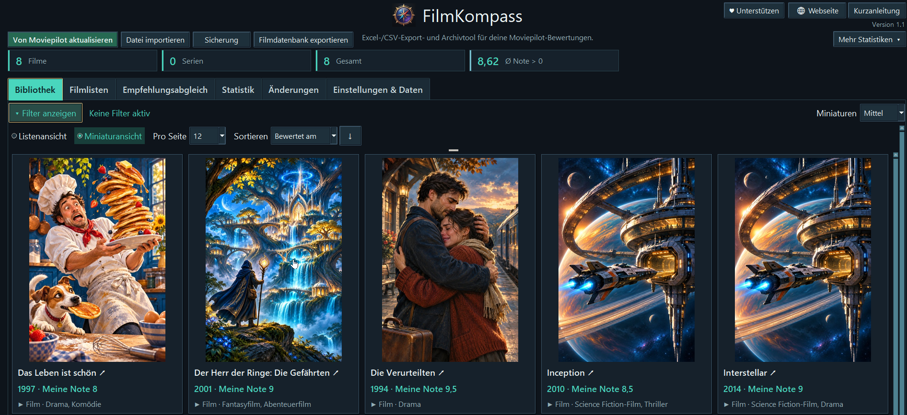
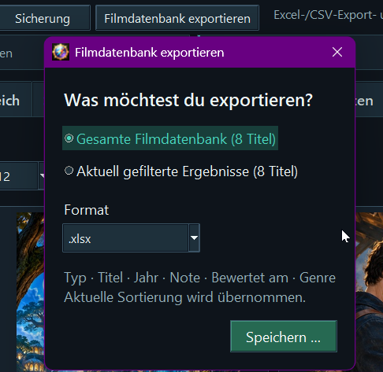
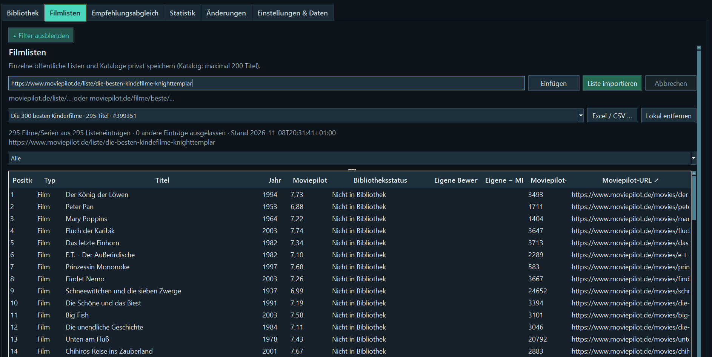
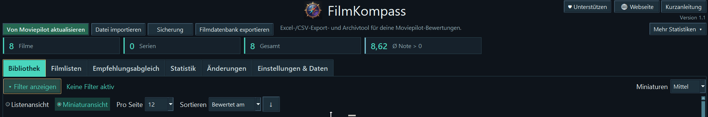

Auf deinem Computer
Öffentliche Moviepilot-Bewertungen herunterladen und lokal speichern. Deine Bibliothek bleibt auch offline verfügbar.
FÜR DEINEN NÄCHSTEN FILMABEND
Sichere deine Moviepilot-Film- und Serienbewertungen lokal.
Exportiere Bewertungen und Filmlisten als Excel oder CSV.
Nutze deine Daten für eigene Analysen – auch mit KI.
Version 1.1 · Windows 10/11, 64 Bit · Portables ZIP · 25,7 MB
Vollständig entpacken und starten. Kein separates Python nötig. Installation & Sicherheit · SHA-256

DER AUSGANGSPUNKT: DEINE DATEN EXPORTIEREN
Deine Film- und Serienbewertungen sollen mehr können, als auf einer Profilseite zu stehen. Lade sie herunter, sichere sie lokal und exportiere sie nach Excel oder CSV.
Wähle die ganze Bewertungsbibliothek oder gezielt gefilterte Ergebnisse. Auch gespeicherte öffentliche Filmlisten lassen sich exportieren. So kannst du deine Daten außerhalb von Moviepilot sortieren, vergleichen und weiterverarbeiten.
Bewertungen bleiben Zahlen – auch Halbnoten. Ein Tabellenexport ersetzt keine vollständige Profilsicherung.

DEIN EXPORT ALS GRUNDLAGE FÜR KI-ANALYSEN
Nutze die Exportdatei für eigene Tabellenanalysen oder stelle sie selbst einem KI-Tool bereit: Lieblingsgenres erkennen, deinen Filmgeschmack auswerten oder Vorschläge für noch nicht bewertete Titel erhalten.
FilmKompass exportiert. Du entscheidest über die Weitergabe. Es gibt kein integriertes KI-Modul und keine automatische Übertragung. Beim freiwilligen Hochladen verarbeitet der externe Anbieter deine Bewertungsdaten; Empfehlungen können unpassend sein.
KI-Anleitung mit vier kopierbaren Prompts und Beispieldateien →AUS EINER FILMLISTE WIRD DEINE AUSWAHL
Eine spannende Moviepilot-Liste gefunden? Speichere sie in FilmKompass und vergleiche sie mit deiner persönlichen Bewertungsbibliothek.
Du siehst vorhandene eigene Bewertungen und erkennst Titel, die noch nicht in deiner Bibliothek stehen. Deine Bewertungen und zusätzliche Listen bleiben getrennt.

Unterstützte öffentliche Listen lassen sich herunterladen, speichern und als Excel/CSV exportieren. Der Empfehlungsabgleich prüft außerdem eingefügte Titel gegen deine Bibliothek.
DEINE BEWERTUNGEN BLEIBEN NUTZBAR
Öffentliche Moviepilot-Bewertungen herunterladen und lokal speichern. Deine Bibliothek bleibt auch offline verfügbar.
Bewertungen nach Excel oder CSV exportieren. Für eigene Auswertungen, zum Weiterarbeiten oder zum Wiederimportieren.
Keine automatische Cloud-Synchronisation oder KI-Übertragung. Du entscheidest, welche Daten du weitergibst.
Für den Profildownload müssen Bewertungen öffentlich sichtbar sein. Währenddessen können andere sie ebenfalls sehen. Danach kannst du sie wieder privat stellen. Datenschutz
WENIGER SUCHEN. MEHR FILMABEND.
Filtere nach Genre, Jahr oder eigener Note. Wechsle zwischen Tabelle und Miniaturen in drei Größen. Kennzahlen und Statistik geben dir einen persönlichen Überblick: Wie viele Titel hast du erfasst und wie bewertest du sie im Durchschnitt?
Eigene Bilder und 15 Genreillustrationen machen die Bibliothek anschaulich. Optionale Cover über fanart.tv ergänzen sie – mit persönlichem API Key und lokalem Cache. Eigene Bilder haben Vorrang.

Deine Daten bleiben lokal und können unabhängig weiterverwendet werden. Mehr zur freiwilligen externen KI-Auswertung findest du oben im Exportbereich. Zur Anleitung mit Beispielen →
IN DREI SCHRITTEN BEREIT
Das kostenlose Windows-ZIP speichern.
Den gesamten Ordner einschließlich _internal behalten. FilmKompass.exe starten.
Öffentlichen Moviepilot-Profilnamen eingeben oder vorhandene Excel/CSV-Datei importieren.
Zur ausführlichen Startanleitung →
Die EXE ist unsigniert. Nutze die offizielle Bezugsquelle und Prüfsummen; Windows-Sicherheitsfunktionen eingeschaltet lassen.
GUT ZU WISSEN
Ja. Alle Funktionen sind kostenlos, der Quellcode steht unter MIT-Lizenz. Unterstützung ist freiwillig.
Windows 10 oder 11 mit 64 Bit. Die ZIP bringt die Laufzeit mit; kein separat installiertes Python und keine Administratorrechte nötig. Hauptfunktionen wurden vom Nutzer auf beiden Systemen getestet.
Unterstützte öffentliche Benutzerlisten und bestimmte Bestenlisten-Kataloge. Nicht jede URL ist abrufbar; Zugriffssperren werden respektiert. Katalogabrufe sind auf 200 Titel begrenzt. Verglichen wird mit der eigenen Bibliothek, nicht frei jede Liste mit jeder anderen.
Für optionale Onlinecover genügt ein persönlicher Fanart.tv API Key von fanart.tv. In Einstellungen & Daten lokal speichern und prüfen. Kein Project Key für normale Nutzer erforderlich. Poster oder eindeutige Zuordnungen können fehlen. Ohne Onlinecover funktioniert FilmKompass weiter.
Die Datenbanksicherung enthält Daten und Bildzuordnungen. Für einen Gerätewechsel Bilddateien zusätzlich sichern. Vollständige Profilsicherungen können private Schlüssel enthalten und dürfen nicht veröffentlicht werden. Mehr zu Start und Sicherung
Die freiwillige Versionsprüfung informiert über neue öffentliche Versionen. Sie ist standardmäßig ausgeschaltet. Updates werden nicht automatisch installiert. Versionen & Hinweise
Quellcode & Projekt · Versionshinweise · MIT-Lizenz · Projekt unterstützen
AUS DERSELBEN WERKSTATT
FilmKompass ist kostenlos und wird unabhängig entwickelt.
Wenn dir das Programm gefällt und du die Weiterentwicklung freiwillig unterstützen möchtest, freue ich mich über eine kleine Unterstützung.
Vielen Dank! ❤️
Die Unterstützung ist vollkommen freiwillig. Alle Funktionen bleiben kostenlos.
Bitte das passende Netzwerk wählen: Litecoin Mainnet und Litecoin BEP20 sind unterschiedliche Zahlungswege. Für Litecoin BEP20 und USDC BEP20 wird dieselbe Empfangsadresse auf der BNB Smart Chain verwendet. Binance Pay ist ein App-Zahlungslink, kein Blockchain-Netzwerk.
PayPal
Per PayPal-App:
Scanne den QR-Code mit deiner PayPal-App. Unter Android findest du den QR-Scanner über Senden → QR-Symbol oben rechts.
Alternativ:
Du kannst auch die PayPal-E-Mail-Adresse kopieren und den Empfänger in deiner PayPal-App selbst eingeben.
Bitcoin Mainnet (Native SegWit)
Litecoin Mainnet
BNB Smart Chain (BEP20)
BNB Smart Chain (BEP20)

Binance Pay · App-Zahlungslink (kein Blockchain-Netzwerk)
Zahlungsanbieter werden erst beim Öffnen eines Links oder beim Scannen in deiner App kontaktiert. Bitte Zahlungsziel, Währung und Netzwerk vor einer Zahlung selbst prüfen. Hinweise zum Website-Datenschutz